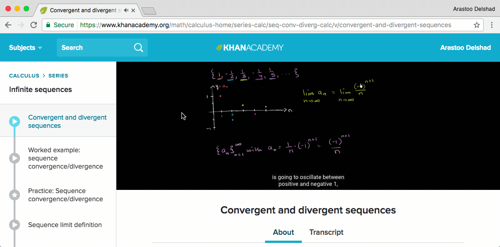

1 To Be A Learner
1.1 Online learning¶
Common terms¶
Study tracks¶
Kiron overs various study tracks from which we recommend you to choose one that fits the best to your interests (e.g. Mechanical Engineering, Political Science, Social Work, Business and Economics, Computer Science, etc.)
Tip
The graphic below shows the study planner of Political Science.
Modules¶
Each study track consists of various modules.
Tip
The graphic below you can see the 2 modules "Introduction to Political Science" and "Political Theory and Thought".
Courses¶
Each module, on the other hand, consists of various courses.
Tip
The graphic below that the module "Introduction to Political Science" consists out of "Introduction To Political Science", "Developing Your Research Project", "Introduction to Research for Essay Writing" and a "Tutorial for Introduction to Political Science".
There are mainly 2 different kind of courses: Live courses and self-paced courses.
Live courses¶
Live courses start at a specific date and end a specific date. The have ...
- assignments due at a specific time
- readings that you need to keep up with
- and other material that you need to work through as the course moves along.
Weekly hours that you put into these courses are less negotiable because you have to keep up with their schedule.
Self-paced courses¶
Self-paced courses do not have a specific date and end a specific date. That means ...
- assignments can be turned in at any time
- and you can work through the material giving it as many hours a week as you would like.
Tip
The graphic below included the following self-paced courses: Introduction To Political Science, Tutorial for Introduction to Political Science, Introduction to Western Political Thought, Tutorial for Political Theory and Thought
Each course has a specific ...
Length¶
Each course has a specific length (e.g. 10 weeks).
Weekly workload¶
Each course has a weekly workload which can be used to plan your study time accordingly (e.g. 11,30 hours per week).
University¶
Each course is associated with a specific university which provides all the course materials (e.g. Harward).
Classroom landing page¶
Each course has its own classroom landing page which offers you a quick overview of the course content (e.g. this one of the course "Introduction To Political Science").
Graphic of the study track 'Political Science'¶

Overview of two modules including several courses within in the study track of "Political Science".
MOOC¶
MOOC is an abbreviation for Massive Open Online Courses. MOOCs are aimed at unlimited participation and open access via the web.
The Kiron Forum¶
The Kiron Forum is a great place to post your Kiron specific questions and to interact with other Kiron students. The Kiron Forum team is constantly monitoring the Kiron forum and will respond to your questions as soon as possible.
Forums of the MOOC providers¶
Forums of the MOOC providers are normally connected to one specific course and offer you the possibility to ...
- get to know other people who have or are also taking the specific course,
- learn why others are interested in the course.
Professors¶
The professors for online courses still exist. These professors come from many different universities and help to create and then teach the course using their years of expertise and studies in the field.
Note
The professor has a role in teaching the course, but many of the usual roles that a teacher have to be readjusted for online learning.
Assessments¶
Assessments can be done via homework, quizzes, and assignments. This differs for each class.
Homework¶
Homework sometimes will be resources provided to read before, during or after class.
Quizzes¶
Quizzes often include activities, multiple choice questions, and poll questions.
Assignments¶
Assignments will usually be graded written work that your peers or an instructor in the class will give feedback on and grade.
Blended learning¶
Summary
Blended learning means taking different approaches to getting the most out of the material.
So discuss whatever you are learning! :)
- Use the MOOC’s own Forum | The Forum of MOOC pltaform such as Edx can be used to discuss anything and to connect with all the other learners from around the world.
- Use discussion Websites | On discussion websites ask any question and discuss with online learners.
- Ask Kiron for help! | The Kiron Team is alsways there for you during your studies.
Use the MOOC’s own Forum¶
The Forum of MOOC pltaform such as Edx can be used to discuss anything and to connect with all the other learners from around the world.

Discussion forum of an Edx course
Use discussion Websites¶
On discussion websites ask any question and discuss with online learners.
- Brainly educational questions and answers forum. Ask any question and get answers to any topic.
- Quora and Reddit the leading questions & answers website. Its users are very active, so you can ask anything and get answers quite quickly normally.
- Khan Academy for some topics, you may try looking for external resources with more materials and discussions. For example, Khan Academy would have videos about almost anything in
mathandsciencesand a discussion below each video where you can ask anything or see previous answers.

Discussion forum of a Khan Academy video
Ask Kiron for help!¶
The Kiron Team is alsways there for you during your studies.
- Student Support can be conteacted on the Kiron Campus or via mail: student-support@kiron.ngo
- Kiron Online Study Groups offer you the possibility to study online with other Kiron students. This can be a valuable resourse for getting help from fellow students who might have stumbled accross the same problems as you have.
- Kiron Services offer a variety of ways to get help. Visit the Kiron Campus to find out more about and to sign up for specific services.
- The Kiron Forum can be used to get answers from various Kiron students. The Kiron Student Support is also reguarly monitoring the Forum. Feel free to aks your questions there.

Ouick overview of the Kiron Forum
1.2 Paradigm change¶
Transition to online learning¶
Summary
Although there are some similarities, online learning differs in a lot of ways from offline learning. The major difference is that you have to hold yourself acountable for your learning.
Major differences from online to offline learning:
- You have to become you own teacher
- You can study anywhere
- You can study anytime
- You mostly interact with peers and fellow students online via forums and Google Hangouts.
Tip
It's is very important to manage your time well to study this way.
Major similarities of online and offline learning:
- You still have to do assignments and tests
- The course content is still present to you by teachers (although they aren't accountable for your learning
Roles of a teacher¶
Summary
In a traditional classroom a teacher is considered to be a Controller, Coach, Organizer, Assessor and Knowledge-sharer. All those roles now have to be fulfilled by yourself.
The Controller¶
A controller is generally in charge of the students’
- actions
- motivations
- directions
- and of maintaining the students’ attention.
The Coach¶
The role of the coach is meant to be
- an encourager
- a guider
- and a role model for students.
The Organizer¶
The role of the organizer includes setting up
- curriculum designs
- the activities
- and writing the lesson plan.
The Assessor¶

As an assessor a teacher gives feedback on
- quizzes
- tests
- assignments
- and projects.
The Knowledge-sharer¶
This is the role of the teacher where they are
- walking students through knowledge
- answering the questions
- and challenging the students to engage with the material.
1.3 Purpose and major goals¶
Reflecting on your purpose¶
Summary
Reflecting on your purpose of studying will help you to set overarching goals and to overcome smaller frustrations that might occur while studying online.
Here are some helpful questions you can answer yourself to reflect on your purpose:
- Why did you sign up for Kiron?
- Why do you want to get a university degree?
- Or why are you interested in learning?
- What are your favorite subjects in school?
- If you had a career before what was it and what did you learn from it?
- What career would you like to have after school?
Anchored learning¶
Summary
Anchored learning is an instructional approach whereby teachers create stories or problems or contexts to fill in the learning experience. By relating the content to real-world problems or stories, the students’ experienced is enriched and their learning is strengthened.
To help you getting into anchored learning follow those tips while learning ...
- try to situate yourself in the context of what you are learning.
- try to apply the conect to your future career.
- think about how to solve a real world problem with the context you learned.
Growth VS Fixed Mindset¶
Summary
Never let yourself limit by your fixed mindset which tells you that you can't change! Always think of your mindset as a growing part of yourself. This makes it much more easier to accept difficult challenges.
A fixed mindset means thinking ...
- that we can’t change,
- that our intelligence, success, and skills are already determined and are unable to change over time.
A growth mindset is the opposite. It is someone ...
- who says "challenge accepted",
- who thrives off of overcoming these challenges,
- who is not afraid to fail because failure means learning.
The following graphic summarizes the main differences between a fixed and a growth mindest.